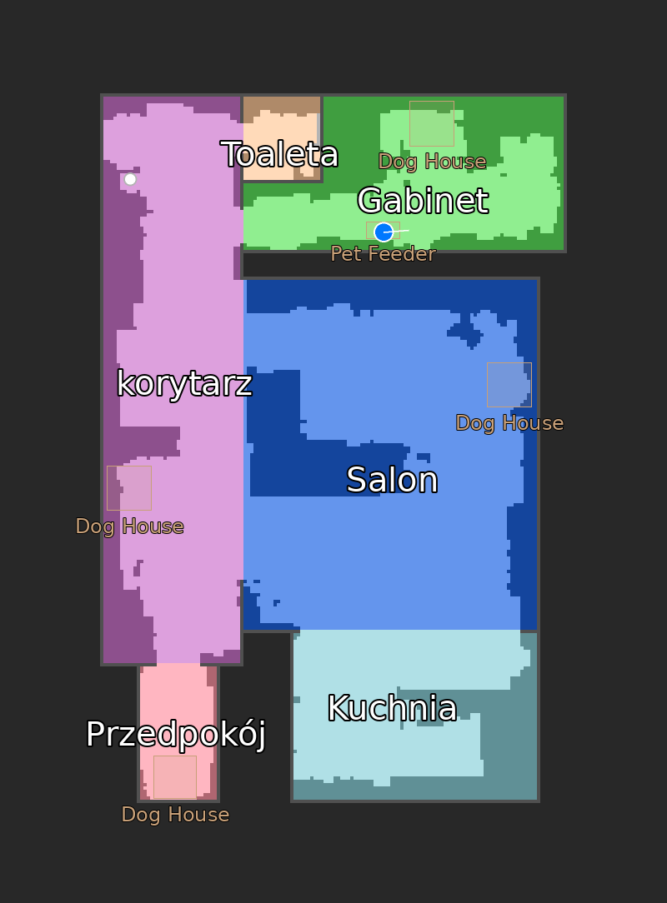
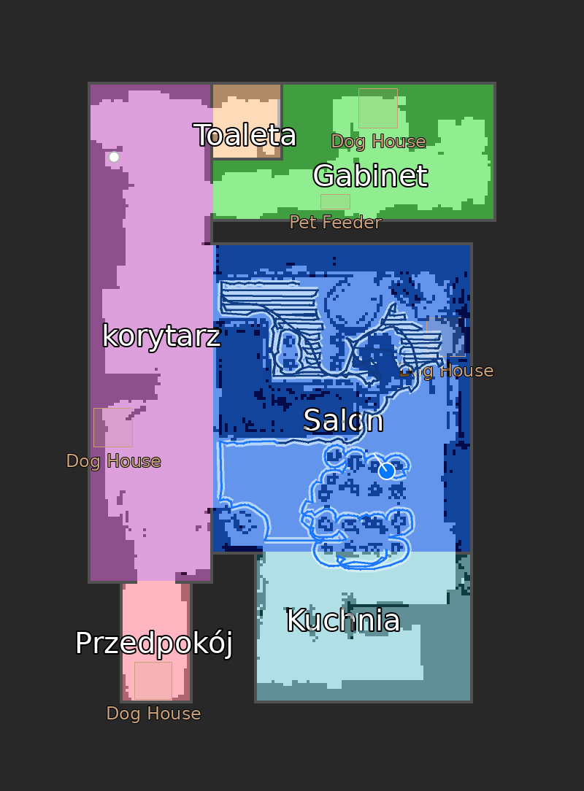
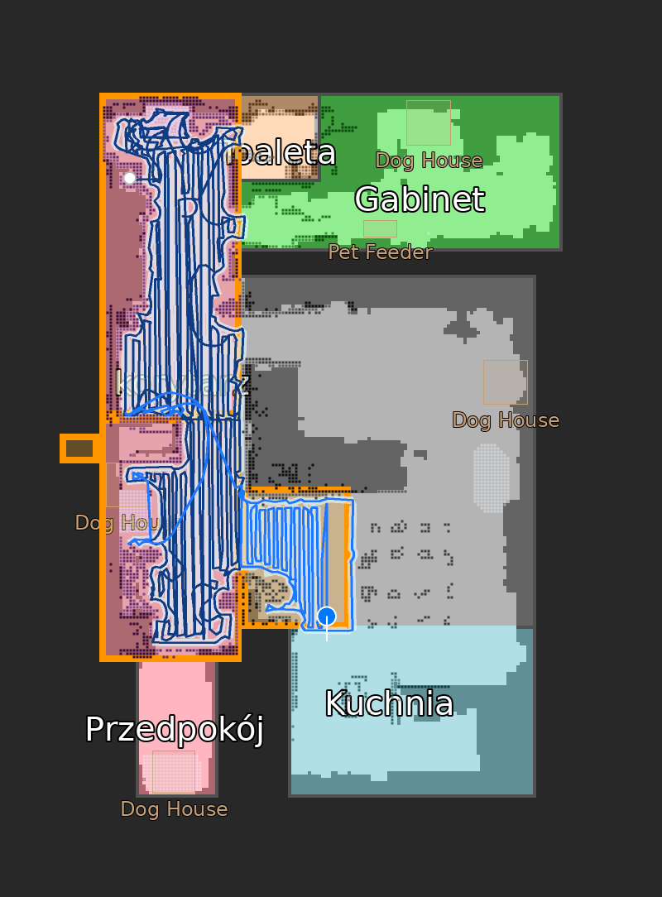

What this is
A free, MIT-licensed custom integration that lets Home Assistant talk to a Narwal vacuum directly. The robot exposes a WebSocket service on port 9002 on your LAN, and this integration speaks its protocol, so every command and every status update stays inside your house.
It began as a fork of sjmotew's integration and grew into an actively maintained continuation: newer Narwal firmware quietly changed which command the robot honours parameters on, which broke room cleaning for everyone. Fixing that pulled in clean modes, zone cleaning, a redrawn map and a pile of firmware-compatibility work.
What you get in Home Assistant
Clean modes that stick
Vacuum, mop, both at once, or vacuum first and mop afterwards. The mode applies to whole-house, per-room and zone cleaning alike.
Zones and rooms
Draw a rectangle on the map card and send the robot there, or start a clean for specific rooms by segment id. Coverage paths are generated for you.
Live HD map
A high-resolution camera entity with the driven trail, the vacuumed strip, planned path, lidar walls and furniture, plus per-layer visibility switches.
Station controls
Wash mop, dry mop and empty dustbin as buttons, mop humidity as a select, and a sensor telling you what the base station is busy with.
Readable faults
48 Narwal error codes translated into states you can actually automate on, in English, French and Polish, instead of a raw integer.
Map card ready
The camera publishes calibration points and a rooms attribute, so the Xiaomi vacuum map card can generate its room config for you in one click.
Screenshots



Supported Narwal models
The connection needs port 9002 open on the robot. Check yours with nmap -p 9002 <vacuum-ip>.
| Model | Status | Notes |
|---|---|---|
| Narwal Flow (AX12) | Fully supported | The model I own. Every release is developed and tested on it, firmware up to v01.08.03. |
| Narwal Flow 2 | Probably working | Worked on the upstream integration; this fork's newer features are not re-tested on it. |
| Freo Z10 Ultra (CX4) | Probably working | Community-confirmed upstream, unverified here. |
| Freo X10 Pro (AX15) | Probably working | Community-confirmed upstream, unverified here. |
| Freo Z Ultra, Freo X Ultra, Freo X Plus, J-series | Not compatible | Cloud-only or a different protocol entirely. A hardware limitation, not something an integration can fix. |
Owning a model that is not listed? If port 9002 answers, please open an issue with your model and results, it usually means it can work.
Installing it
The integration ships as a HACS custom repository.
- In Home Assistant, open HACS, then the three-dot menu, then Custom repositories.
- Add
https://github.com/sytchi/NarwalIntegrationwith category Integration. - Download Narwal Flow Robot Vacuum and restart Home Assistant.
- Add the integration from Settings > Devices & services and give it your vacuum's IP address.
Requirements are modest: Home Assistant 2025.1.0 or newer, the robot on the same network, and nothing blocking port 9002. A static DHCP lease for the vacuum is a good idea, since the integration is configured by IP.
Honest limitations
- Deep sleep is a wall. The WiFi module answers a TCP handshake while the robot's main processor sleeps, so Home Assistant connects but hears nothing. Opening the phone app wakes it. There is no reliable local wake, and that is a protocol limit rather than a bug.
- One client at a time. The robot talks to a single WebSocket client. A second connection, including a debugging session, silences the first.
- Fan speed is write-only. The robot accepts a level but never broadcasts the current one.
- Firmware drift. Narwal changes payload schemas between firmware generations without notice. This is validated on Flow firmware v01.08.03.
Protocol notes
None of this is documented by the vendor: Narwal has no public API and declined to open one. The command format was reconstructed from captured traffic and the wire protocol is protobuf without a schema. If you are reverse engineering a Narwal yourself, two findings save the most time. Recent firmware ignores the payload you send to clean/plan/start and simply replays whatever shortcut is stored on the robot, and clean/start_clean is the path that honours parameters, but it rejects the task unless the coverage path field is filled in. The robot never validates that path, so a generated serpentine over the target area is enough.